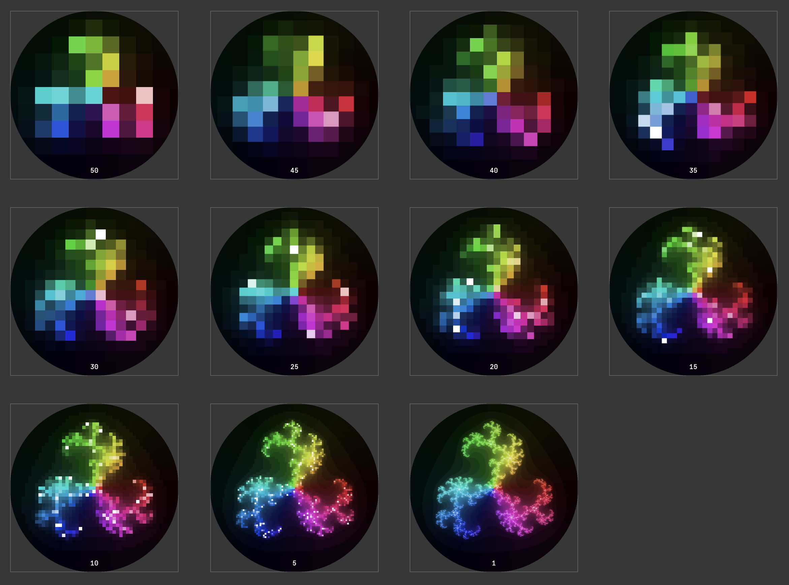

Snapshots
A snapshot is a view of the current Luxor drawing in its current state, before it's been closed via finish. You can take a snapshot, then continue drawing on the current drawing.
The following code exports a series of snapshots made with snapshot, showing the state of the computation for different values of the stepby parameter. (This image is a composite of all the snapshots.)

using Luxor, ColorSchemes, Colorsfunction julia(z, c, maxiter::Int64) for n = 1:maxiter abs(z) > 2 ? (return n) : z = z^3 + c end return maxiterendfunction drawjulia(c::Complex, pwidth, pheight; klo = 0.0, khi = 1.0, cpos = Point(0, 0), w = 4, stepby=1, maxiterations = 300) xmin = cpos.x - w/2; ymin = cpos.y - w/2 xmax = cpos.x + w/2; ymax = cpos.y + w/2 lo = 10; hi = 2 for col = -pwidth/2:stepby:pwidth/2 for row = -pheight/2:stepby:pheight/2 imagex = rescale(col, -pwidth/2, pwidth/2, xmin, xmax) imagey = rescale(row, -pheight/2, pheight/2, ymin, ymax) pixelcolor = julia(complex(imagex, imagey), c, maxiterations) if pixelcolor > hi hi = pixelcolor end if pixelcolor < lo lo = pixelcolor end s = rescale(pixelcolor, klo, khi) a = slope(Point(row, col), O) h, sa, l = getfield.(convert(HSL, get(ColorSchemes.inferno, s)), 1:3) sethue(HSL(mod(180 + 360 * a/2π, 360), sa , 2l)) box(Point(row, -col), stepby, stepby, :fillstroke) end end sethue("white") text("$(stepby)", boxbottomcenter(BoundingBox()) + (0, -20), halign=:center) snapshot(fname = "/tmp/temp-$(stepby).png") return lo, hiendfunction main() w = h = 500 Drawing(w, h, :rec) fontsize(20) fontface("JuliaMono-Bold") origin() circle(O, w/2, :clip) for s in vcat(50:-5:1,1) l, h = drawjulia(-0.5368 + 0.0923im, w, w, maxiterations = 250, w=3, stepby=s, klo=1, khi=100) end finish() preview()endmain()